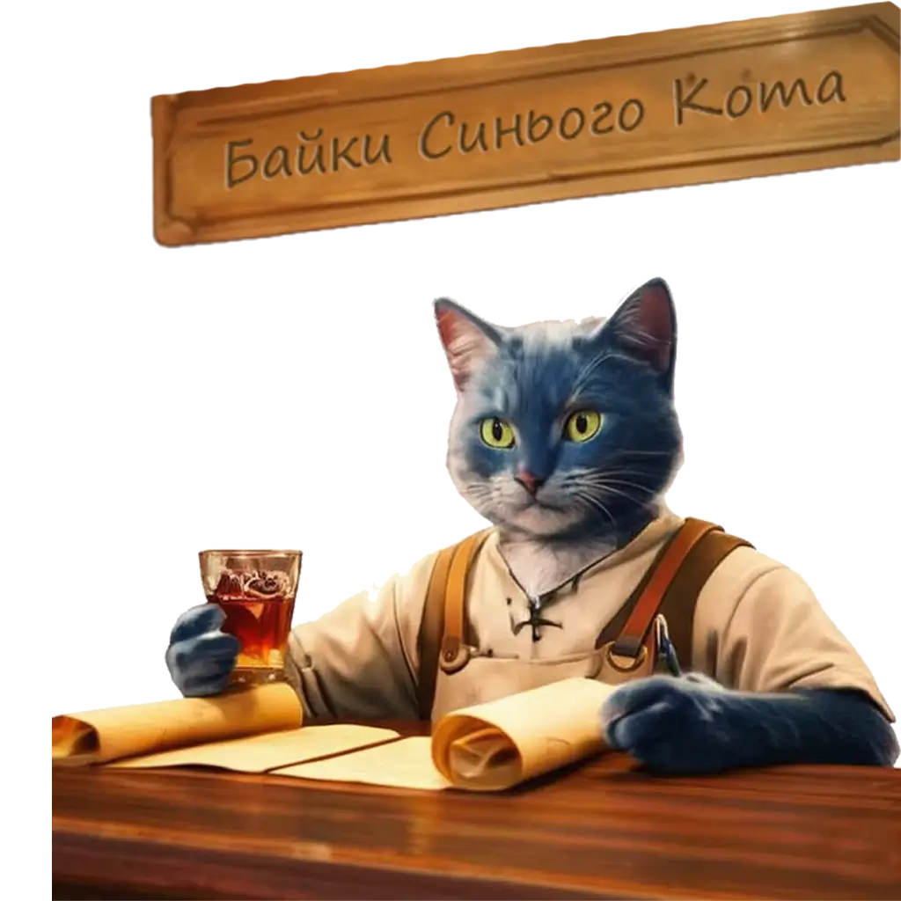

Довгих днів, та приємних ночей, подорожній!
Прошу сідай отам, де менше крихт, і посунь пивний кухоль – я тобі зараз таке розповім, що борода зав’ється, навіть як у тебе її нема.
Цей розділ не просто збірка текстів. Це хроніки, що їх я особисто писав (ну добре, іноді надиктовував одному заплямованому писарю, але ідеї мої!). Тут ти знайдеш легенди про походження найсмачніших страв, байки про кулінарні подвиги давніх героїв, історії з кухонь, де готують не лише суп, а й змови. Тут хрумтить хліб, вариться цибуля, і кожне слово пахне приправами.
Я розповім, як шаман у степах наварив перший борщ, чому імператор не дожив до десерту, і хто насправді вкрав рецепт рогаликів у двоголового дракона. Звісно, всі імена змінено, а винних уже з’їли. Але атмосфера справжня: тріск вогнища, гуркіт кухонних казанів і брязкіт келихів.
Цей розділ для тих, хто хоче не лише готувати, а й поринути в казку. Тому відкривай кожну статтю як нову главу кухонного епосу. Байка за байкою — і ти вже не просто кухар, а кулінарний авантюрист.
Гортай, читай, дивуйся — а потім бери ложку і приготуй щось справді легендарне!